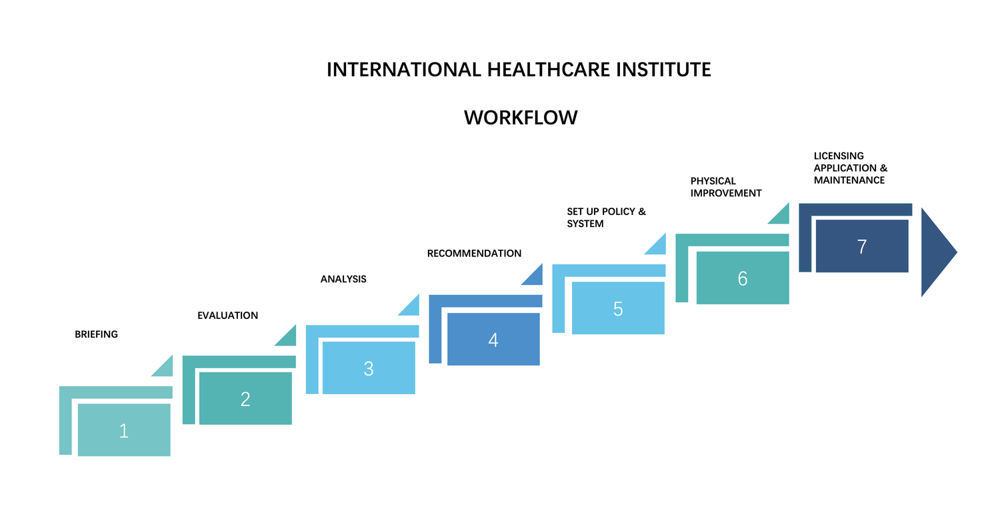

Comprehensive Healthcare Licensing & Compliance Services
Jump to: Clinic licensing · Day Procedure Centres · Staff training · System design

Clinic License Application Support (Cap 633 Compliance)
Navigating the clinic licensing process can be complex, requiring adherence to various regulatory standards and compliance guidelines set forth by local authorities. At IHI, we offer comprehensive clinic licensing consultancy services designed to guide healthcare providers through each step of the process with ease.
Our expert team has in-depth knowledge of the Hong Kong Private Healthcare Facilities Ordinance (Cap. 633) and other local regulations, ensuring that our clients meet all necessary requirements to obtain their clinic licences. From initial application to the final approval, IHI provides detailed guidance, assisting in the preparation of all required documents, including facility plans, operational procedures, and staff qualifications.
We also support our clients in meeting health and safety regulations, infection control standards, and staffing requirements, which are crucial for ensuring a safe and compliant healthcare environment. With IHI's expert guidance, you can rest assured that your clinic will be fully compliant and positioned for success.
Our services include
- Document Preparation for Clinic License Application: Assisting with the preparation and submission of licensing applications and supporting documents.
- Cap 633 Facility Audit & Compliance Checks: Conducting pre-licensing audits to assess the clinic's readiness for regulatory inspections.
- Government Liaison & Licensing Submission: IHI acts as authorised representative for clients, handles all application procedures and submits the licence application.
- Compliance Consulting: Providing expert advice on ongoing compliance with operational standards and best practices, ensuring your clinic meets the latest licensing and compliance requirements.
IHI's commitment to compliance and regulatory excellence ensures a seamless licensing process, allowing you to focus on delivering high-quality care to your patients.
Reference: Code of Practice for Clinics (2025 edition) (PDF)
Our clinic licensing workflow
In brief, our workflow is as below.
- Briefing and evaluation — we visit your medical centre or discuss your needs, and assess the size and services of your organisation.
- Analysis and recommendations — gap analysis against the Code of Practice and a preliminary work schedule.
- Policies, procedures and improvements — set up policies and procedures, arrange staff training, and physical improvements if needed.
- Application submission — as your authorised representative we prepare and submit the licence application to the Department of Health.
- Site inspection preparation — we prepare the facility and staff for inspection and any follow-up actions.


Day Procedure Centre Licensing Support
Obtaining a licence for a Day Procedure Centre (DPC) involves meeting rigorous regulatory requirements set by local authorities to ensure the highest standards of patient safety, clinical quality, and operational efficiency. IHI's expert team provides tailored support throughout the licensing process to ensure your Day Procedure Centre meets all necessary legal and compliance standards.
Day Procedure Centre licensing application process
We guide you through each phase of the licensing process, from the preparation of application documents to ensuring that your facility meets the operational standards outlined in relevant regulations. Our support covers everything from facility layout and equipment requirements to staffing qualifications and infection control protocols.
Key steps to obtain your DPC licence under Cap 633
- Facility Standards: Compliance with healthcare engineering, space, equipment, and safety standards as specified in the Private Healthcare Facilities Ordinance (Cap. 633) and relevant guidelines for Day Procedure Centres.
- Staffing & Qualifications: Ensuring that your medical, nursing and allied health staff meet the professional qualifications and staffing levels required by regulatory authorities.
- Operational Procedures: Developing and documenting procedures for patient care, risk management, and emergency protocols to ensure compliance with licensing standards.
- Infection Control & Safety: Meeting the infection control standards and health & safety protocols required for all Day Procedure Centres.
IHI helps you navigate these requirements and ensures your application process is seamless and timely. By working closely with you, we ensure that your Day Procedure Centre complies with the Code of Practice for Day Procedure Centres (2024) and other relevant legal frameworks, ensuring that your facility is fully licensed and operational.
For additional resources, we provide access to detailed regulatory documents and guides:
- Guidance Notes for Application for Day Procedure Centre LicenceOffice for Regulation of Private Healthcare Facilities (PDF)
- Code of Practice for Day Procedure Centres (2024 Edition)Office for Regulation of Private Healthcare Facilities (PDF)
- Private Healthcare Facilities Ordinance (Cap. 633)Hong Kong e-Legislation

Staff Training for Compliance & Safety
Ensuring that healthcare staff are well-trained in compliance and safety protocols is crucial for maintaining the highest standards of patient care. IHI provides comprehensive training programmes tailored to meet the specific regulatory requirements of the healthcare industry, helping your staff stay updated on best practices and legal obligations. Our training programmes cover essential areas such as infection control, first aid, and other compliance-related topics, ensuring your team is equipped to operate within the legal and safety standards expected of healthcare professionals.
IHI offers customised training that not only focuses on regulatory compliance but also emphasises the importance of patient safety, quality of care, and efficient operational practices.
Infection Control and Risk and Contingency Management
Infection control is a fundamental aspect of healthcare, and proper first aid training ensures that staff can act promptly and effectively in emergency situations. IHI's Infection Control and Risk and Contingency Management training programmes are designed to meet regulatory requirements while also promoting a safe and clean healthcare environment.
- Infection Control: Training focuses on preventing healthcare-associated infections (HAIs) through proper hygiene, sterilisation procedures, and infection prevention techniques. We cover guidelines on hand hygiene, use of personal protective equipment (PPE), environmental cleaning, and infection surveillance.
- Risk and Contingency Management: Comprehensive training equips staff with the skills to respond to medical emergencies, including CPR, documentation and communication, medical transfer and how to manage emergency health issues in a healthcare setting.
Our training programmes are designed to meet the standards required for healthcare professionals, including guidelines set by regulatory bodies such as the Department of Health and the relevant government departments. These programmes not only fulfil compliance needs but also ensure that your staff is prepared to maintain a safe environment for both patients and employees.
Customised Training for Regulatory Compliance
Every healthcare facility faces its own unique regulatory challenges. IHI provides customised training solutions that are tailored to the specific compliance needs of your clinic or healthcare facility. Whether you operate a clinic, a Day Procedure Centre, or another healthcare setting, we ensure that your staff receives specialised training based on the regulations that apply to your specific facility type.
Our training modules address a variety of critical compliance areas, including:
- Patient Safety Standards: Understanding the legal and regulatory requirements for ensuring patient safety, from clinical practice to facility design and emergency protocols.
- Operational Compliance: Training staff to adhere to operational standards such as patient record management, patient complaints management, patient incident reporting, medication management, and privacy regulations under the Personal Data (Privacy) Ordinance.
- Clinical Practice Guidelines: Ensuring that clinical staff are trained in the latest best practices and regulatory guidelines, including patient rights, informed consent, notification of reportable diseases, and patient data protection.
At IHI, we provide both in-person and online training options to ensure flexibility and accessibility for your healthcare team. With our expertise in healthcare regulations and compliance, your staff will be equipped with the knowledge and skills they need to meet legal requirements and ensure ongoing operational success.
System Design for Healthcare Regulations and Standards
IHI specialises in designing and implementing systems that ensure healthcare facilities comply with relevant ordinances and regulatory standards. A well-structured system design not only facilitates smooth operations but also ensures that your healthcare facility remains fully compliant with the Private Healthcare Facilities Ordinance and other relevant regulations. Our approach integrates the latest compliance frameworks into every aspect of your healthcare facility's design, from patient flow to staff management, and from medical equipment maintenance to healthcare engineering.
Our team works closely with your organisation to understand the unique needs of your facility, and then develops comprehensive system designs tailored to meet legal requirements, industry standards, and operational goals. This includes policy development, operational workflows, and facility layout that align with regulatory requirements, ensuring that compliance is embedded from the ground up.
Policy and Operational Planning
Effective policy and operational planning are critical to ensuring compliance with healthcare ordinances. IHI helps healthcare providers develop comprehensive policies and operational procedures that align with local regulations and best practices. Our expertise ensures that your facility operates smoothly while adhering to all relevant legal requirements.
- Regulatory Alignment: Designing policies that meet the specific requirements of the Private Healthcare Facilities Ordinance and other relevant regulations and laws. We assist in drafting operational policies that cover everything from patient registration to data security and confidentiality.
- Standard Operating Procedures (SOPs): We help create clear, concise, and actionable SOPs that ensure consistency and compliance across your facility's operations, including clinical, administrative, and patient care protocols designed to protect both patients and staff.
- Risk Management: IHI's consultants work with your team to identify potential risks in operational workflows and develop mitigation strategies, including staff training on emergency response, risk reduction strategies, and compliance with safety standards.
Our approach ensures that every policy and procedure reflects not only regulatory requirements but also your facility's operational goals, providing a solid foundation for your healthcare business.
Facility Management Guidelines
Ensuring that your healthcare facility meets the highest standards of safety, efficiency, and regulatory compliance requires a well-organised facility management system. IHI offers expert guidance on developing facility management systems that comply with the operational standards set by the Private Healthcare Facilities Ordinance and other relevant regulations. Our guidelines help ensure your facility's physical environment supports both patient care and regulatory adherence.
- Layout and Design Compliance: Consulting on the proper layout and design of healthcare facilities to ensure compliance with regulations on healthcare engineering (ventilation, power supply, medical gas), space allocation, infection control, accessibility, and safety standards.
- Maintenance Standards: Establishing procedures for the regular maintenance of healthcare equipment, medical supplies, and infrastructure, ensuring that all aspects of the facility are kept in working order and compliant with industry standards.
- Environmental Health and Safety: Comprehensive guidelines for infection control, sanitation, and waste management that meet both regulatory and industry standards, safeguarding patient and staff health.
- Regulatory Compliance Reviews: Periodic reviews and audits to assess the compliance of your facility with regulatory changes and industry developments, ensuring that your management systems remain current and effective.
We work with healthcare providers to ensure that the operational aspects of the facility — from infrastructure to daily maintenance — meet legal requirements, ensuring smooth operations and patient safety.
Discuss your facility with a consultant
Whether you are opening a new clinic, applying for a Day Procedure Centre licence, or preparing for a renewal inspection, we can help.